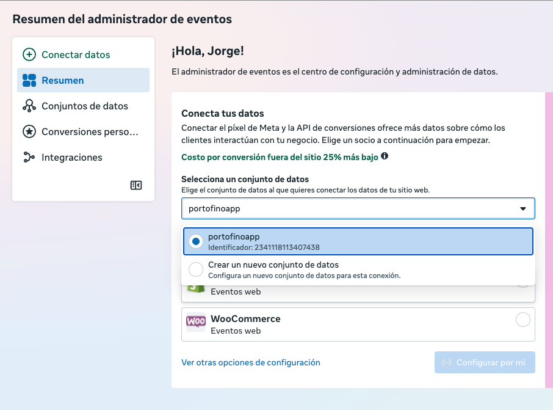
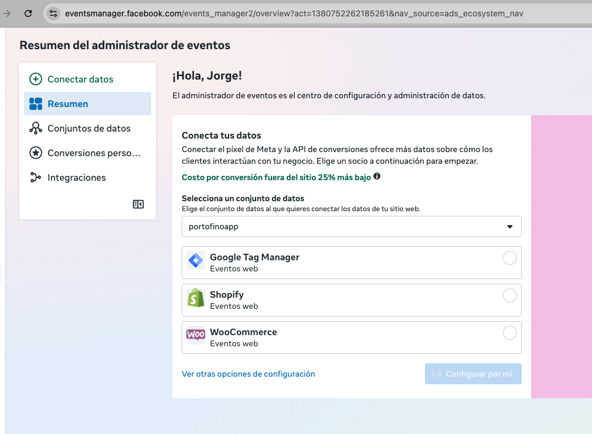
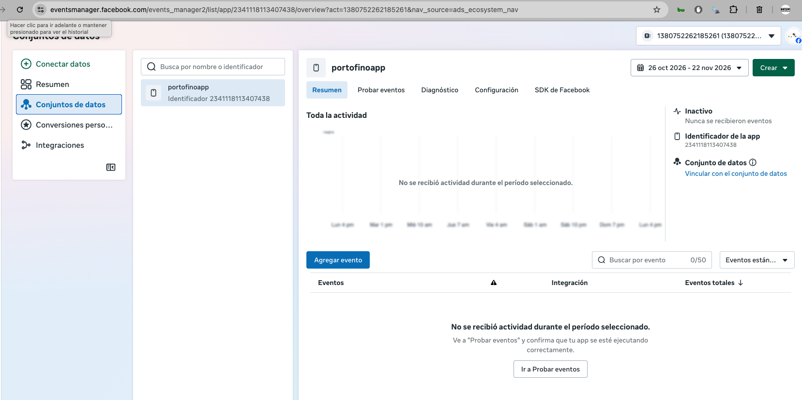
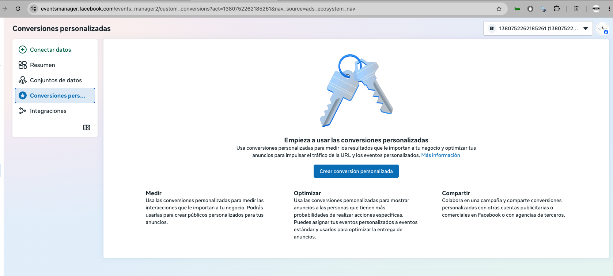
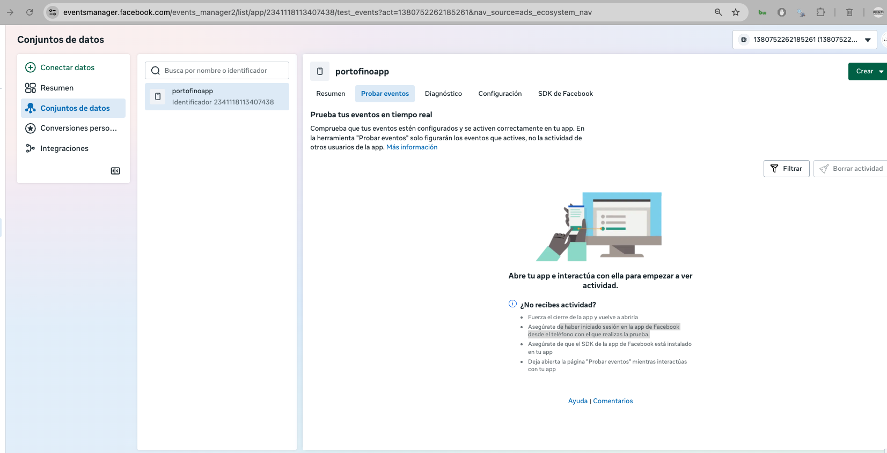
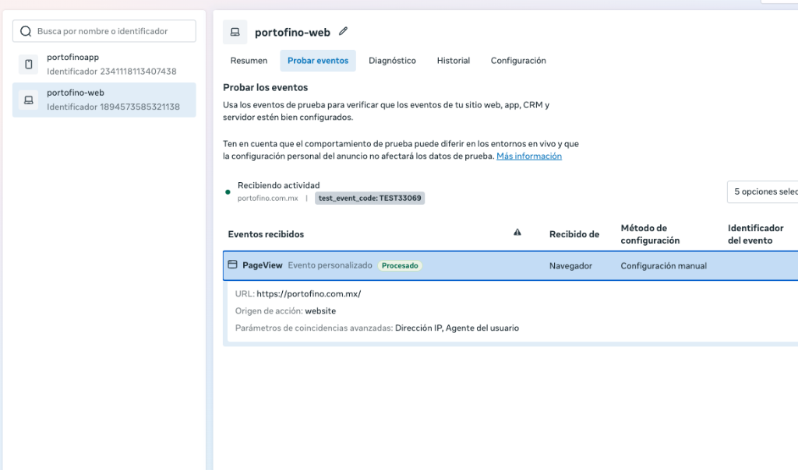

Corrección del ecosistema Meta — pixel, cuenta publicitaria y medición
Documento de respaldo de los hallazgos y acciones realizados para dejar la medición de Meta (Events Manager, pixel, cuenta publicitaria) en estado operativo antes de activar campañas.
Objetivo del ejercicio
Que cada solicitud de cotización pueda atribuirse a su origen real (Facebook, Instagram, Google, directo) y que los eventos del sitio (PageView, ViewContent, Contact, Lead) alimenten una cuenta publicitaria administrable desde el negocio Portofino — condición necesaria para campañas optimizadas por conversión.
Hallazgo 1 — La cuenta publicitaria vivía fuera del negocio problema
El Administrador de anuncios mostraba “No hay cuentas publicitarias para mostrar” aunque ya existían campañas previas (posts promocionados). La cuenta 1380752262185261 existía como activo suelto, creada al promocionar desde el perfil personal, sin vincular al portafolio comercial Portofino.
- Consecuencia: sin acceso a Facturación y pagos, sin administración centralizada, sin poder compartir activos (pixel, públicos) con la cuenta.
- Acción: identificar el ID en el selector de cuentas → agregarla al negocio vía Configuración → Cuentas → Cuentas publicitarias → Agregar existente → asignar personas con control total.
Hallazgo 2 — El conjunto de datos visible no era el del sitio problema
El sitio (meta-pixel.js) enviaba eventos al pixel 1124678623449829 (“portofino”), registrado en otra cuenta — no administrable desde este negocio ni visible en el Events Manager. En el Events Manager solo existía portofinoapp (ID 2341118113407438), creado como identificador de app, en estado Inactivo — nunca se recibieron eventos.
- Síntoma: “No se recibió actividad durante el período seleccionado” aun con el sitio en producción.
- Corrección aplicada:
meta-pixel.jsreapuntado al ID administrable2341118113407438. Si el dataset de tipo app no acepta eventos web limpiamente, el paso siguiente es crear un conjunto de datos web (Conectar datos → Web → Píxel de Meta) y actualizar el ID.
Hallazgo 3 — Medición incompleta problema
Sin conversiones personalizadas, sin dominio verificado y sin parámetros de URL en los anuncios — el resultado era tráfico sin atribución.
- Atribución de origen resuelta del lado del sitio (
fb.js): en el primer toque de la sesión se capturautm_source/medium,fbclid(Meta),gclid(Google Ads) o el referrer externo, y se guarda como campoorigenen cada solicitud de cotización. - Panel admin (
admin.html): los registros ahora se muestran en tabla con filtros por estado, canal, texto libre y orden por fecha/cliente; la columna Canal muestra “vía web · de fb/ig”. - Parámetros de URL para anuncios (se pega al crear cada anuncio):
utm_source={{site_source_name}}&utm_medium=paid&utm_campaign={{campaign.name}}&utm_content={{ad.name}}
{{site_source_name}}se resuelve solo a fb / ig / an / msg — distingue Facebook de Instagram.
Pendientes para cerrar por hacer
portofino-web (ID 1894573585321138), desde Conectar datos → Web dentro del negocio. meta-pixel.js reapuntado (23-nov).1380752262185261. Requisito para optimizar por conversiones.portofino.com.mx por meta-tag (se agrega al sitio).Evidencia capturas
Clic en cada imagen para verla en tamaño completo.


act=1380752262185261: socios GTM/Shopify/WooCommerce como opciones de conexión; sin datos conectados.



ERR_BLOCKED_BY_CLIENT — el ad blocker del navegador impedía la carga de fbevents.js.evidencia/07.pngevidencia/08.pngResumen de cambios en el sitio hecho
| Archivo | Cambio |
|---|---|
fb.js | Captura de atribución de origen en primer toque (UTM, fbclid, gclid, referrer) → campo origen en cada solicitud. |
admin.html | Registros en tabla con filtros (estado / canal / búsqueda), orden por fecha y cliente, ficha expandible por fila, columna de origen. |
meta-pixel.js | Pixel reapuntado al dataset web portofino-web → ID 1894573585321138 (antes 1124678623449829, fuera del negocio; 2341118113407438 resultó ser dataset de app). |